Introduction

You may have heard the myth that the Swiss would tie barrels of brandy to the necks of St. Bernard rescue dogs to warm up cold skiers in the Alps (this gif is from a Disney cartoon that depicts a St. Bernard giving a very cold Pluto a shot from his barrel. Binge drinking is not usually depicted in children's cartoons anymore - it was 1936, times have changed). The basis of this myth is the belief that drinking alcohol increases body temperature because people experience an apparent flush of warmth after drinking it. But, this subjective feeling of warmth may or may not reflect an actual increase in core body temperature.
How would we know if drinking brandy actually changes body temperature? As data-driven scientists, we should try to answer this question by devising an experiment to test whether drinking brandy changes core body temperature (and, no, this is not what we'll be doing in class this week, sorry to disappoint you).
One possible experiment that would test the hypothesis that drinking brandy affects core body temperature would be:
- Administer a shot of brandy (1.5 fl. oz.) to a randomly selected group of people (our experimental subjects).
- Measure each person's core body temperature.
- Compare the average of the measured body temperatures to 98.6° (average core body temperature for humans).
- If body temperature is higher than 98.6°, conclude that drinking brandy increases core temperature.
- If body temperature is equal to 98.6° conclude that drinking brandy doesn't affect core temperature.
- If body temperature is less than 98.6° conclude that drinking brandy decreases core temperature.
Brandy experiment: results
x̄ = 98.9°
s = 1.2
n = 20
If we conducted the experiment and got the results in the box on the right, the "If body temperature..." statements tell us that since the sample mean body temperature of x̄ = 98.9° is above 98.6° we should conclude that brandy increases body temperature.
That's what the data says, and you can't argue with the data. Right?
Random sampling strikes again
Unfortunately, it isn't so simple.
The problem is, the three "If body temperature..." statements suggest that we can only conclude that drinking brandy doesn't affect core temperature if the mean for our data is exactly equal to 98.6°, and any differences, no matter how small, indicate that brandy either increases or decreases body temperature.
This is a problem because we are working with random samples, and by now we should expect some random variation in sample means. So, even if the population mean, μ, is exactly equal to 98.6°, the mean of a sample selected from that population, x̄, probably won't be.
The simulation to the right illustrates the issue - the data points represent a sample of 20 body temperatures selected from a population with a body temperature of μ = 98.6°, and the mean of the sample is shown below the graph. If you click the "Select a random sample" button a new sample of 20 is selected, which has a new mean. As you click repeatedly, note that the sample mean is rarely equal to 98.6°. If we can only conclude that brandy has no effect on body temperature when the sample mean is exactly equal to 98.6°, we will mistakenly conclude that brandy has an effect most of the time.
Knowing that random sampling will often give us sample means that are at least somewhat different from the population mean suggests that we shouldn't interpret small differences as being indicative of a real biological effect. It stands to reason that at some point a sample mean becomes different enough from the population mean that we should be comfortable interpreting the difference as a real effect of brandy, and thus not likely due to random chance, but it isn't obvious how big the difference needs to be to reach this conclusion.
The question is, then, how different from 98.6° would our sample mean
have to be to conclude that brandy has an actual effect on core
temperature?
To answer that question we need inferential statistics, which are methods that allow us to draw conclusions about a population based on a sample of data. This week we will learn how to do a type of null hypothesis significance test (NHST), called a one-sample t-test, to determine if our sample mean of x̄ = 98.9° is different enough from 98.6° to conclude that drinking brandy increases body temperature.
Inferences are based on hypotheses
Before we learn about the one-sample t-test we will use in particular, we need to spend a little time on NHST's in general.
In the sciences, we base our conclusions on tests of hypotheses. A hypothesis is simply a possible explanation for some phenomenon. When we do an NHST we have to specify two hypotheses, the null hypothesis, and the alternative hypothesis.
Null hypotheses are always hypotheses of no difference, or randomness. We can express a null hypothesis about our test of the effect of brandy on core body temperature as:
Null hypothesis: at a population level, average body temperature (μ) for people drinking brandy is 98.6°.
In other words, since we know that body temperature for people who aren't drinking brandy is 98.6°, body temperature should still be 98.6° for people who drink brandy if brandy has no effect. If the null hypothesis is true, any difference between our experiment's sample mean and this hypothetical population value is just due to random sampling variation.
But there is another possibility - brandy may have an actual effect on body temperature, in which case people drinking brandy would have body temperatures that aren't equal to 98.6°. We may not know what their body temperature should be, but if brandy affects core temperature it definitely shouldn't be 98.6° anymore. We can thus express this alternative hypothesis as:
Alternative hypothesis: at a population level, average body temperature (μ) is not equal to 98.6° for people drinking brandy.
You can see that this null hypotheses is very specific - it specifies a hypothetical value of the population mean exactly. In contrast, alternative hypotheses are not specific at all, they just say "whatever the population mean might be, it is not equal to the null value".
Thanks to the fact that we will be using random samples to infer the properties of a population as a whole we can't ever be certain which of these two hypotheses is true. Instead, we will calculate a probability, and use the size of the probability as the basis for choosing which explanation to accept. The general procedure that all null hypothesis significance tests follow is:
Formal null hypothesis significance testing
- Identify the null hypothesis - specify a specific hypothetical value for a population parameter.
- Calculate a test statistic from the data that measures how far the data are from the value specified in the null hypothesis.
- Compare the test statistic to a sampling distribution to obtain a probability of the test statistic, if the null hypothesis is true (the p-value).
- Compare the p-value to a predetermined level, called the α-level
- If p is less than α reject the null in favor of the alternative hypothesis.
- If p is greater than α retain the null hypothesis.
- Draw a scientific conclusion, based on the result of testing the null hypothesis.
The one-sample t-test
The above set of steps are common to all NHST's, but the details are different depending on the data type and experimental design used. In this body temperature experiment example, we have:
- One sample of data: 20 people
- A continuous numeric variable: body temperature
- A known, hypothetical value we will compare out sample of data to: 98.6°
The appropriate null hypothesis significance testing procedure to use to compare a single sample mean to a specified hypothetical population mean is called a one-sample t-test. The steps in the procedure are as follows:
1. Identify the null (and the alternative)
We always state null hypotheses in terms of population parameters, never sample estimates. The reason for this is that we already know the value of the sample estimate - it is x̄ = 98.9° - and it makes no sense to test hypotheses about its value.
What we don't know is whether the population mean is equal to 98.6° (as the null supposes it is), or something else (as the alternative states). We only test hypotheses about population parameters because we only test hypotheses about things we don't already know.
The symbol for "null hypothesis" is Ho, or "h-naught", with the o representing a subscripted zero. We can write the null hypothesis symbolically as:
Ho: μ = 98.6°
or, equivalently, as:
Ho: μ - 98.6° = 0
Once the null hypothesis is stated, the alternative hypothesis is just that the null hypothesis is false. Symbolically the alternative hypothesis is:
HA: μ ≠ 98.6°
2. Calculate a test statistic
The test statistic tells us how far from the null hypothetical value our observed sample mean is, in units that can be used to obtain a p-value in the next step. We will be using the t-distribution as a sampling distribution, like we did when we learned to construct confidence intervals.
First, we need to know the standard error for the data set. The standard error for a single sample of data is just the standard deviation divided by the square root of the sample size. If our sample of 20 people had a standard deviation of 1.2, then the standard error would be:
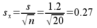To use the t-distribution we need to convert the amount of difference between the sample mean and the population mean into standard errors. This is very much like the z-transformation we learned when we studied the normal distribution, and it has the same purpose - after doing this calculation we can use a t-distribution with the correct degrees of freedom to calculate a probability. The observed t-value for our data, with a sample mean of 98.9° and a hypothetical population mean of 98.6°, is:
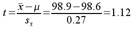
This tells us that 98.9° is 1.12 standard errors above 98.6° (it's 1.12 standard errors away from 98.6°, and since the value is positive it's above 98.6°). This observed t-value is the test statistic we need to compare to a t-distribution to obtain a probability for our experimental result.
3. Compare the test statistic to a sampling distribution to obtain a p-value
To test our null hypothesis, we will calculate a probability, called a p-value, that we will use to decide whether to accept our null hypothesis, or reject it in favor of the alternative.
The probability we calculate is of a very specific thing:
The p-value is the probability of randomly sampling from a population with a mean equal to the null value (μ = 98.6°) and obtaining a sample mean that is at least as different from the null value as the observed sample mean (x̄ - μ = 0.3°).
We need a probability distribution to use our t-value to obtain this probability, and the distribution we will use is the t-distribution. Remember from the confidence interval exercise that the t-distribution is a good mathematical model of a sampling distribution for means, and its shape depends on degrees of freedom. For a one-sample t-test degrees of freedom equals the sample size minus 1, which this example is 20-1 = 19.
| 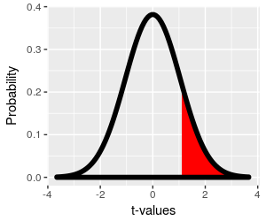
The t-distribution with 19 degrees of freedom is shown in the graph to the left. The probability of getting a sample mean at least t = 1.12 standard errors above 98.6° by chance is the red shaded area from 1.12 to infinity, which is equal to: p = 0.14 Finding the probability for an observed t-value is best left to the computer - we will use MINITAB to calculate all of our p-values for us. This p-value is called a one-tailed p-value, because we are only using one tail of the t-distribution to obtain it. |
| 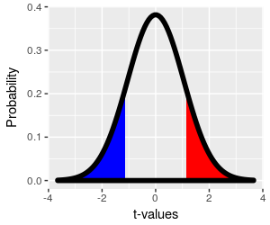
We may want to use a two-tailed p-value instead. The alternative hypothesis for our test is that the population mean is not equal to 98.6°, which suggests that it could be either higher or lower than that. The one-tailed p-value only considers the possibility that the actual body temperature is higher than 98.6°, because our sample mean was higher, and the t-value was positive. But, we didn't necessarily know which direction body temperature would change before we did the experiment. We observed a difference of 0.3°, but if the null hypothesis is true this is just random variation, and that amount of chance difference could have happened in either the positive or negative direction. To include differences as big as we observed in either the positive or negative direction, we would want to include the blue region, which starts at t = -1.12 and extends to negative infinity, as well as the red region, to calculate our p-value. Since the t-distribution is symmetrical, the area in the blue region is also 0.14, and the two-tailed p-value that uses both the red and blue regions is p = 0.28. |
How do you decide between one-tailed and two-tailed p-values? It depends on what you want to know:
- If we were only interested in the possibility that drinking brandy increases body temperature, and our concern is that our result may look like a real increase, but in fact may only be due to random sampling. Given this, random sample means that look like increases are the only ones we would be concerned about. Random sample means that are smaller than the hypothetical population mean would not lead us to think that brandy increases body temperature, so we could ignore them. If we were only interested in increases in body temperature, we would do a one-tailed test.
- If we were interested in any change in core body temperature that brandy causes, then random samples in either direction could look like real differences. We should thus consider the possibility that a difference as big as we observed could happen by chance in either direction, and we should use both tails to obtain our p-value. If we are interested in detecting any change, we need to do a two-tailed test.
As a general rule, it's a good idea to do two-tailed tests so that your results could surprise you. For the brandy experiment, we may think that brandy increases body temperature because drinking it makes you feel warm. But, it is possible that drinking brandy produces that feeling of warmth by moving some of the heat from the core of your body to the surface, which could decrease core body temperature in spite making your skin feel warm. Either possibility would be interesting, and we should use the two-tailed p-value for our test so that either result is detectable.
4. Compare p to α - reject the null hypothesis if p < α, and retain the null hypothesis if p ≥ α
We now have a p-value of 0.28. This tells us that the probability of getting a difference of 0.3° between a sample mean and the population mean by random chance is 0.28. In other words, if drinking brandy has no effect on core body temperature we would expect that 28% of the time our experiment would result in a sample mean that was at least 0.3° away from 98.6° due to random sampling variation.
This seems like a pretty high probability of the result being due to random chance, and thus not due to a real effect of brandy, but how do we know that p = 0.28 is big enough to conclude that brandy has no effect?
Unfortunately, the answer is that we can't know for sure, because drawing a conclusion based on a probability leaves open the possibility that we are wrong. We encountered this issue when we learned about confidence intervals - our 95% confidence intervals have a probability of including the population mean of 0.95, which means we have a probability of not including it of 0.05. We can decrease the chance of omitting the population mean by increasing our confidence level to 99%, but that makes the intervals larger and forces us to consider a larger range of possible values for the population mean, even though the additional ones we include in the wider interval have a small chance of being the right number.
So, we can't produce achieve absolute certainty, but we can decide in advance of conducting the test how low the p-value has to be before we conclude that brandy has an effect. We call this threshold value against which we compare our p-value the alpha level, or simply α.
It's up to the data analyst to set alpha, but even though any value could be used it's traditional to set alpha to 0.05. We draw our conclusion about the null hypothesis using the decision rule:
- If p is less than 0.05, reject the null in favor of the alternative hypothesis.
- If p is greater than 0.05, retain the null.
Our p-value is p = 0.28, greater than 0.05, so we retain the null.
COMMIT THIS DECISION RULE TO MEMORY! This is a very simple rule, but it only works if you remember it!
We already met this decision rule when we were testing normality of data, but in a different form. We "failed" the normality test when p was less than 0.05, and "passed" it when p was greater than 0.05. The AD test of normality is in fact a null hypothesis test, but the null hypothesis is that your data are normally distributed. If p is greater than 0.05 you retain this null (and "pass" the test), whereas if p is less than 0.05 you reject this null (and "fail" the test).
By the way, statisticians prefer to use fail to reject or retain when they talk about the null, rather than accept, because doing so acknowledges that this hypothetical value may still be incorrect, but that our data provide too little evidence against 98.6° as the value of μ to reject it.
5. Draw a scientific conclusion
We retained the null hypothesis that body temperature is equal to 98.6° at the population level. Given this, scientifically speaking we do not have sufficient evidence from our sample mean of 98.9° to conclude that people who drink brandy have a body temperature that is different from 98.6°.
If you reject the null hypothesis, you can say your result is statistically significant. If p is greater than 0.05 and you retain the null hypothesis, as we did, then the difference is not statistically significant. This phrase can cause mischief, because "significant" and "important" are synonyms in everyday usage, but not in statistics. If you say your results are significant, all you are saying is that your results are unlikely to be due just to random chance, but that isn't the same thing as saying they are biologically important.
So, now that we understand null hypothesis significance testing, let's return to the logical setup for our experiment. The only change we need to make is in the "If body temperature..." statements, with the changes in italics:
- Administer a shot of brandy (1.5 fl. oz.) to each experimental subject
- Measure each person's core body temperature (with an ear thermometer)
- Compare the average body temperature to 98.6°.
- If body temperature is statistically significantly greater than 98.6°, conclude that drinking brandy increases core temperature.
- If body temperature is not statistically significantly different from 98.6° conclude that drinking brandy doesn't affect core temperature.
- If body temperature is statistically significantly less than 98.6° conclude that drinking brandy decreases core temperature.
Now when we assess our results we don't base the decision on whether the sample mean is equal to 98.6°, we base the conclusion on whether the sample mean is significantly different from 98.6°.
What does it mean to accept the alternative?
When you get a statistically significant result, you reject the null hypothesis and accept the alternative hypothesis. The alternative hypothesis is HA: μ ≠ 98.6°, which just states that the null is wrong. The alternative hypothesis is not HA: μ = x̄ = 98.9°.
It's important to realize this, because researchers often act as though rejecting the null is evidence that the population mean is equal to the sample mean. This is not wrong, and is actually a perfectly sensible thing to do, because when the null is rejected the best information we have about the actual value of the population mean is the estimate we get from our sample mean.
However, understand that we never test the hypothesis that μ is equal to the sample mean! When you reject the null bear in mind that you should treat the sample mean as an estimate of an unknown parameter. Reporting a confidence interval along with the sample mean is a good way to acknowledge this, and to represent the uncertainty remaining about the actual value of the population mean.
Formal null hypothesis testing - the critical t-value approach
So far, you've learned to compare a p-value to an alpha level to determine whether to reject or retain the null. An alternative approach is to compare the observed t-value to a critical t-value.
| 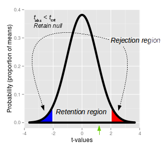
This graph of a t-distribution illustrates the approach. Once we pick an alpha level of 0.05, we can put 1/2 of it in the upper tail and 1/2 in the lower tail, which defines the upper (red) and lower (blue) rejection regions. The t-values that define the ends of the shaded regions are the critical t-values. The critical t-value for our experiment, with 19 degrees of freedom is tcrit = ±2.1. If an observed t-value falls into either of these rejection regions the probability of observing a t-value of that size is less than 0.05, and we would reject the null. Between the critical t-values of -2.1 and 2.1 is the retention region. Any t-value that falls within the retention region has a probability of occurring that is greater than 0.05, and would cause us to retain the null. Our observed t-value of 1.12 (shown by the green arrow below the x-axis) falls inside of the retention region - thus, we retain the null, and conclude there our sample mean of 98.9 is not significantly different from 98.6. If you click on the picture you'll see that it changes between a p-value approach and a critical t-value approach each time you click so you can see how the two methods are related. |
|
Critical t-values come from t-tables. A portion of a typical
t-table is shown here (with some of the degrees of freedom rows
removed to make it shorter). The column labels refer to the alpha level for either two-tailed (α(2)) or one-tailed (α(1)) t-tests. Since we are doing a two-tailed test, we need to use the top row (the α(2) column headings) to pick the column to use - with an alpha level of 0.05 we need to use t0.05. The row to use is determined by degrees of freedom. With 20 data points is 20-1 = 19, so the critical t-value is in the row labeled with 19 degrees of freedom, and the column labeled with α(2) of t0.05 - the critical t-value is 2.093, which is in red italics. The graph of rejection and retention regions is a nice way of visualizing how this is working, but we can express all of this with another simple decision rule:
|
Now you have two methods for doing the same thing, evaluating the null hypothesis, so which should you use?
The good news is that it doesn't matter much. Since the p-value comes from the observed t-value, and the critical t-value comes from the alpha level, the two approach will always lead to the same conclusion about the null hypothesis.
However, we will primarily use the p-value approach in class because it is simple, and carries some additional information - a p-value of 0.00001 is stronger evidence against the null hypothesis than a p-value of 0.049. The critical t-value approach doesn't give us this extra information about the level of significance, so we will opt for the more informative p-value approach.
Relationship between a one-sample t-test and a confidence interval
If you look at the curve illustrating rejection and retention regions above it should remind you of how we illustrated a confidence interval - it illustrates an interval within which 95% of sample means should be found, if the null is true.
Let's look at how a one-sample t-test compares with a 95% confidence interval for a sample mean, graphically:
|
Rejection/retention regions in a t-test |
95% confidence interval for the sample mean |
| 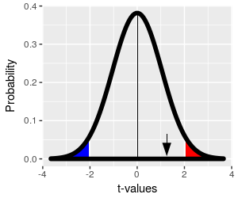 | 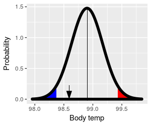 |
|
The retention region is centered on the hypothetical population mean, and it captures 95% of the possible sample means. If you click on the image you can toggle between using t-values as the x-axis and using degrees (remember, calculating t is just a matter of doing a unit conversion to express data units as standard errors, so we can convert back and forth between the data units and t-values without changing the shape of the distribution). The sample mean 98.9° is the black arrow, and it's within the retention region - we retain the null, and conclude that the population mean is 98.6°. |
The sample mean is a sample-based estimate of the population mean. A 95% confidence interval centered on the sample mean of 98.9° uses the t-distribution to find limits that capture 95% of possible sample means. The shaded areas in the tails are the 5% of the possible sample means that are not in the confidence interval. Any mean falling within the confidence interval is considered a possible value for the population parameter. The hypothetical population mean of 98.6° is shown by the black arrow. It falls inside of the 95% confidence interval, and we would conclude that 98.6° is a possible value for the population mean. |
With the graph of a t-test on the left set to show units of degrees, the only difference between the left and right graph is that the left is centered on the hypothetical value of 98.6°, whereas the graph on the right is centered on the sample mean of 98.9°. If we center on the hypothetical population mean, as we do with the t-test, we check if the sample mean falls inside of the interval. If we center on the sample mean, as we do with a 95% confidence interval, we check if the hypothetical population mean falls inside of the interval. In both cases we are using sample information to infer the properties of the population the sample comes from.
Why don't we test what we want to know?
Our null hypothesis is that body temperature is equal to 98.6°, but we didn't calculate the probability that the population mean is equal to 98.6°.
Our sample mean is 98.9°, but we didn't calculate the probability that the population mean is equal to 98.9°.
Instead, we assumed that the population mean is 98.6°, and calculated the probability that a random sample from the population would result in a sample mean that is at least 0.3° away from 98.6°. This might strike you as being a little more complicated and indirect than just calculating the probability of the hypothetical value for μ. And it is, in fact, more complicated and indirect. But there are a couple of reasons we calculate the p-value the way we do.
- First, we don't calculate the probability the null hypothesis is true because we can't. A probability is a number of times an event occurs divided by the total number of trials. To calculate the probability that the null hypothesis is true we would have to know how often the null is true when the sample mean is 98.9°, and how often it is not true. We can't know either of these things from a single sample of data.
- We also can't calculate the probability that the population mean is 98.9°, for several reasons.
- First, we don't know how often the population mean is equal to 98.9° when the sample mean is equal to 98.9°, and how often it is not (and can't know from a single sample of data).
- Second, 98.9° is the mean we observed in our data, it is not a value we hypothesized in advance. If the only reason we have for hypothesizing that body temperature for brandy drinkers is 98.9° is that we got a sample mean equal to that, then our hypothesis test becomes logically circular.
- Third, if we went ahead and set the population mean, μ, equal to the sample mean, x̄, and tried to run a t-test, the t-value would always be (x̄ - μ)/sx̄ = 0, and the p-value would always be 1.
In contrast, we were able to specify a null hypothetical value for μ exactly, and in advance. This will continue to be true as we move into more complex experimental designs, even if we are completely ignorant of the characteristics of the system we are studying and have no idea what the population mean is (how? I'll leave you in suspense, don't want to spoil the big surprises!). And, as long as we have a sampling distribution (like the t-distribution) we can use our data to calculate a p-value to test the null.
Another advantage people give for null hypothesis testing is that using "no difference" as a default conclusion protects us against confirmation bias, and we need all the help we can get in that regard. For example, since drinking brandy makes us feel warmer, we might be predisposed to believe that it raises body temperature. However, we don't test the hypothesis that drinking brandy makes us warmer - we test the hypothesis that drinking brandy has no effect on body temperature, and only conclude that brandy actually makes us warmer if the mean of our experimental data shows a big enough effect to be statistically significant. This makes it more difficult for us to favor pet hypotheses, and makes it easier for us to objectively evaluate the evidence.
Assumptions of the one-sample t-test
Statistical assumptions are conditions that have to be met in order for a statistical analysis to work correctly. There are two common sources of statistical assumptions: A) general assumptions that ensure that data values that are representative of the population from which they are selected, and B) specific requirements needed by particular test procedures for their p-values to be accurate.
General assumptions (A) are common to essentially all statistical hypothesis tests, regardless of how they obtain their p-values. The two most common ones are:
- Independence of observations
- Random sampling
Independent observations are needed so that the sample size we report is equal to the number of distinct measurements of the population we have. For example, if we selected a single person and measured their body temperature 20 times we would have less information about human body temperature than if we measured the temperatures of 20 different people once each, because repeated measurements of the same person are not independent. Random sampling is needed to ensure that group means are unbiased estimates of the population mean.
An example of a specific assumption for a one-sample t-test (B) is:
- Normality
We assume that the data are normally distributed, because if this is true the t-distribution is a very accurate model of a sampling distribution for a continuous variable.
The t-distribution is robust to violations of the normality assumption - meaning that the p-values are still accurate if the data are not normally distributed - provided that the non-normality is not too severe, and that the sample size is large. Large sample sizes allow us to rely on the central limit theorem (CLT) - remember, the CLT tells us that the distribution of sample means is bell-shaped for large sample sizes even when the distribution of data is not, and since the t-distribution is a bell-shaped sampling distribution it works well for large sample sizes with any distribution of data. At small sample sizes a skewed or bimodal distribution of data in the population results in a sampling distribution that is not bell-shaped, and the t-distribution is less accurate as a model. Sample sizes of 30 or more are enough to justify using the t-distribution for all but the most severe violations of normality.
We will routinely test for normality before we do t-tests. If we violate normality we will look at the sample size, and if n is 30 or larger we will go ahead and conduct the t-test in spite of the non-normality of our data.
Errors in hypothesis testing
When we reject or retain the null, we are making a definite conclusion based on a probability, which inevitably means that some of our conclusions will be wrong. We can't eliminate errors from statistical hypothesis testing, but we can quantify the chances that we are making one class of mistakes (false positives), and we can take steps to minimize others (false negatives).
The errors we could make depend on the conclusion we draw.
| 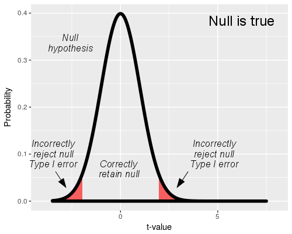
If we reject the null, we are drawing the right conclusion as long as the null is false. If the null is true, rejecting it is a mistake. We call rejection of a true null a Type I error. Since we think of a rejected null as a positive result, a Type I error is also called a false positive. If we reject the null, the only mistake we could be making is a false positive, Type I error. We have a lot of control over our Type I error rate - we actually get to specify how big we want it to be. The t-distribution we use in our hypothesis test represents the null hypothesis, so the "Null is true" graph shows a t-distribution with the rejection and retention regions identified. When the null is true, any time a sample mean falls into the rejection region we would reject the null, which would be a mistake. The rejection region is set by our choice of alpha level. With an alpha level of 0.05 and a true null hypothesis, 5% of sample means will cause us to mistakenly reject the null - thus, the alpha level is our false positive, Type I error rate. Since we set alpha to 0.05 for every test we run, it is always the same regardless of sample size. |
| 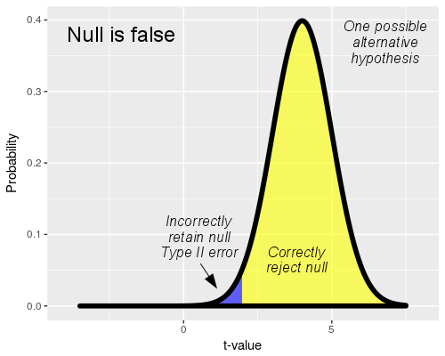
If we retain the null we reach the correct conclusion if the null hypothesis is true, but we make a mistake if the null hypothesis is false. We don't know what the actual population mean is if the null is false, but to illustrate the mistake we can make when we retain the null we need to pick one so that a sampling distribution can be drawn. You'll see that this graph uses a value of t = 4 to represent the alternative, which is equivalent to a population mean that is 4 standard errors above the null value (that is, body temperature of 4 x 0.27 = 1.08 degrees above 98.6°, or μ = 99.68). When we do a t-test, the rejection and retention regions are defined by the null hypothesis, and are the same here as above. However, if the null is false we are randomly sampling from this alternative distribution instead of the null distribution above. The population mean of μ = 99.68 is far enough away from the null that random samples from this population fall into the rejection region most of the time - the yellow part of the curve represents the sample means that cause us to correctly reject the false null. However, some of the sample means will be far enough below the population mean of μ = 99.68 that they fall into the retention region. When this happens we retain the null in error. The blue shaded part of the distribution is the portion that falls into the retention region, and represents the rate at which we would fail to reject the false null hypothesis. Failing to reject a null hypothesis that is false is called a Type II error, which are false negative errors. The blue shaded area under the curve is the probability of a Type II error, which is called beta (β). The yellow portion of the curve also has a name: statistical power. The yellow part of the curve represents cases in which we were able to detect an actual difference from the null value, and the probability of correctly rejecting a false null is 1-β. We want to be able to detect actual biological effects when they occur, so rejecting a false null is a good thing - we want our experiments to give us good statistical power, like this illustration. But, there is a problem with calculating Type II error rate and power. |
If the null hypothesis is false we don't know what the
actual population mean is (if we knew we wouldn't have to do any
hypothesis testing!). If we picked a different alternative than this
one, there would be a different amount of overlap with the retention
region, and the Type II error rate (and thus power) would be different.
Consequently, if we don't know what the actual population mean is, we
can't know what the Type II error rate is either.
So, not only do we not get to specify Type II error rate like we do Type I error rate, we don't even know what the Type II error rate is. What we can do, though, is adopt practices in our experiments that make Type II error rates as low as possible, and thereby increase power, even if we don't know what the rates actually are.
Minimizing false negatives, increasing statistical power
So, how do we make β smaller when we don't know its value? In a general
sense, we do this by doing one of two things:
1) make the differences we are trying to detect large, or
2) make the size of the standard error small
| 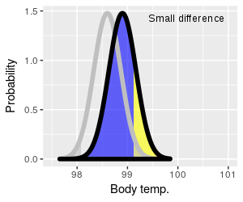 |
Let's look first at how the amount of difference between the null value and the actual value of the population mean affects Type II error rate and power. In the graph on the left the t-distribution for the hypothetical value of 98.6° is shown with a thick gray line, and the rejection regions are also shaded in gray. The alternative (which we're assuming now is true) is shown in black. Instead of using t-values for the x-axis these graphs use body temperature to make it more clear what is happening. You can click on the graph to change it from a small difference to a large difference. The null curve is in the same place for both, but the alternative switches from 98.9° to 99.5° as you switch from small to large difference, respectively. The blue-shaded region represents false negative (Type II) errors, and the yellow part of the curve is statistical power. When the actual population mean is close to the null value (small difference) most of sample means fall into the retention region - which means that we can expect most of our experimental results will give us Type II errors. Power to detect a small difference is also therefore low (lots of blue, not much yellow). When the difference is large, most sample means fall into the rejection region - most of our experimental results will give us correct positive test results, so there will be few false negatives and power will be high (little blue, lots of yellow). |
|
So, for a given sample size and standard error, the bigger the difference is that we're trying to detect the greater our power to detect it will be. In experiments the way we influence the size of difference we are trying to detect is in our choice of the size of the treatment. In our brandy experiment we could increase the difference by having our subjects drink more brandy - if drinking brandy affects core body temperature, then drinking more should cause a bigger change. However, we don't always have much control over the amount of difference we are trying to detect - it is often a property of the system we study, rather than something we get to set. We also have to be careful about increasing dosages of treatments, because we don't want to overdose the subjects. |
|
| 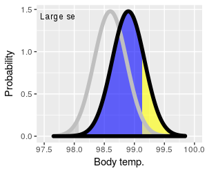 |
The other way of increasing power is to decrease the size of the standard error. You can see the effect of reducing standard error by clicking on the graph to the left, which will switch between curves with large standard errors (broad curves) and small ones (narrow curves). Small standard errors increase the amount of yellow (power), and decrease the amount of blue (Type II error). It's important to note that the alternative curves for both large and small sx̄ have the same mean of 98.9°, so the increase in power isn't due to the size of difference getting bigger. Instead, the increase in power is due to the fact that narrower curves give us more precise estimates of the actual population mean. This is reflected in the graph as a smaller retention region, and a larger retention region, when the standard error is small - the two curves with a small standard error overlap less, and make it more likely that we'll sample a mean that falls into the rejection region, and (correctly) reject the null. |
As we learned when we encountered standard errors as components of confidence intervals, there are two ways to reduce the size of a standard error:
- Decrease the standard deviation (careful measurements, use of subjects that are similar in size, age, sex, etc.)
- Increase the sample size
Increasing sample size is considered the best way to minimize standard error size, and is always beneficial to the study. It may not always be possible to increase sample sizes for practical reasons (i.e. expense, time constraints, ethical considerations), but bear in mind that using small sample sizes can end up producing such low statistical power that the experiment is not worth doing.
Summing up - statistical errors and power
To summarize, here is a table of the errors you can make depending on whether the null is true or false:
| Conclusion drawn | ||
|---|---|---|
| Reality | Retain | Reject |
| Null is true | No error (1-α) | Type I error (α) False positive |
| Null is false | Type II error (β) False negative |
No error (power, 1-β) |
Bear in mind - you never know if you made an error, because you never know if the null is true or false under real-world experimental conditions. But, if you retain the null the only error you could make is a Type II error, and if you reject the null you could only have made a Type I error.
So, what does brandy do to body temperature?
You may know this already (Mythbusters even did an episode on it), but drinking alcohol does not actually raise your core body temperature. Alcohol causes the capillaries in your skin to dilate (i.e. increase in diameter), which allows more blood to flow from your core to the surface of your body. This makes you feel warm, but by increasing circulation of blood to your body's surface it actually increases heat loss from your core. As long as you aren't in a cold environment that's not a big problem, but for people who already have low core temperatures an increase in heat loss can cause their temperature to drop further, and can cause hypothermia and death.
So, believe it or not, Disney cartoons from the 1930's are not a reliable source of medical information.
Next activity
In this week's activity we will whether our height to stride ratios are equal to 1.19, which is the value used to estimate heights of suspects from stride lengths found at crime scenes.